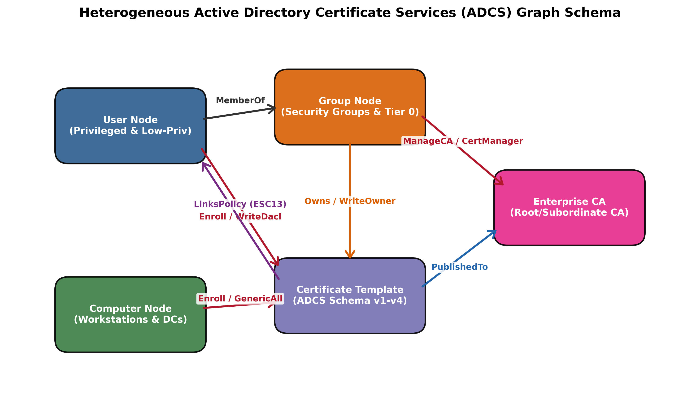
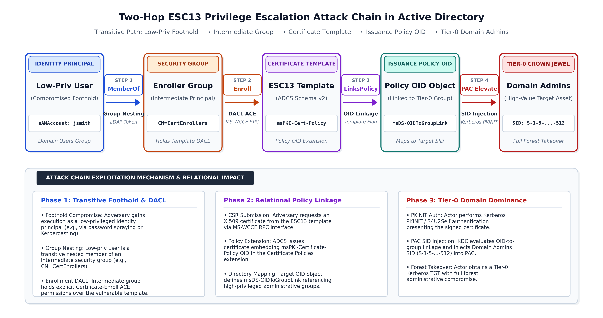
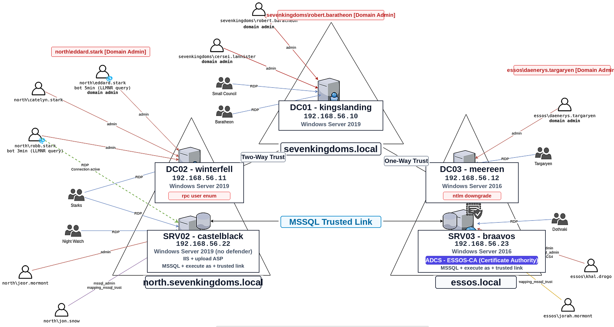
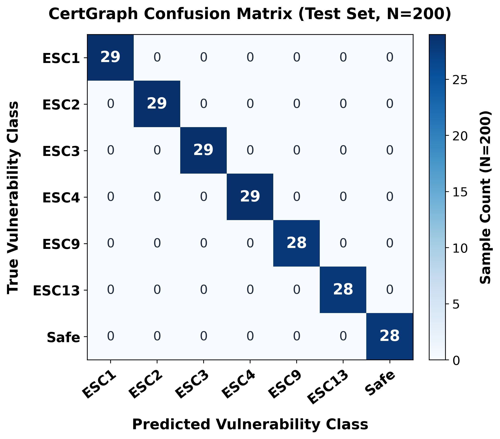
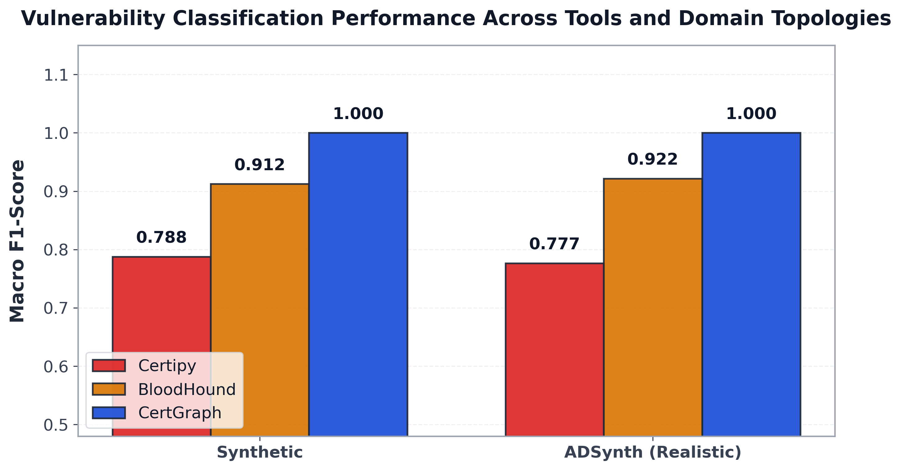
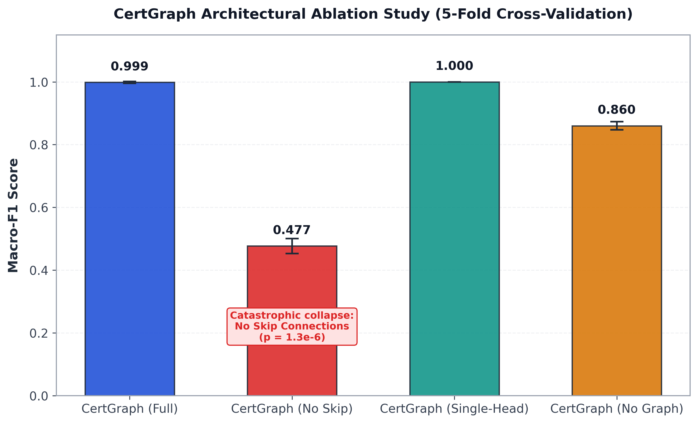
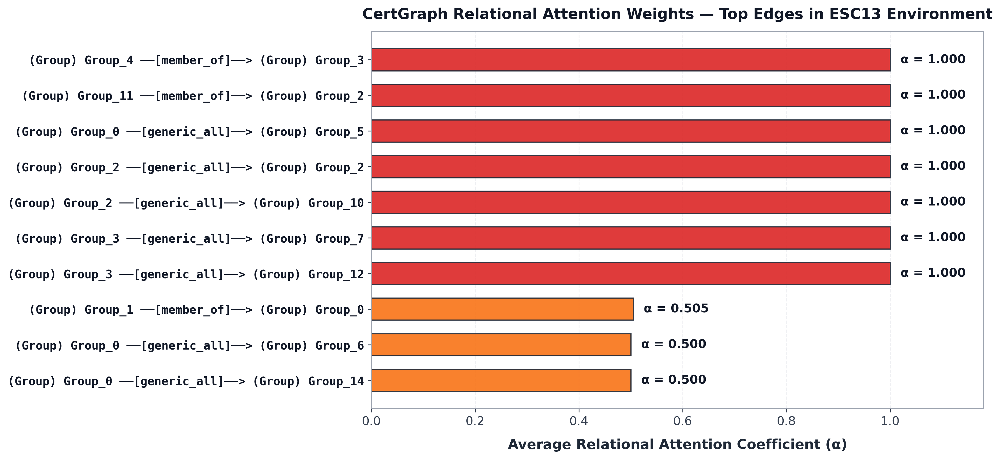
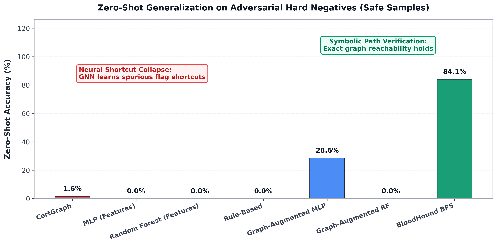
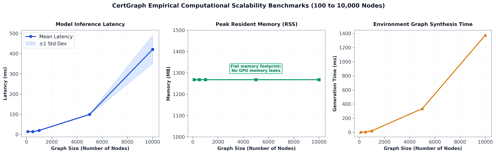
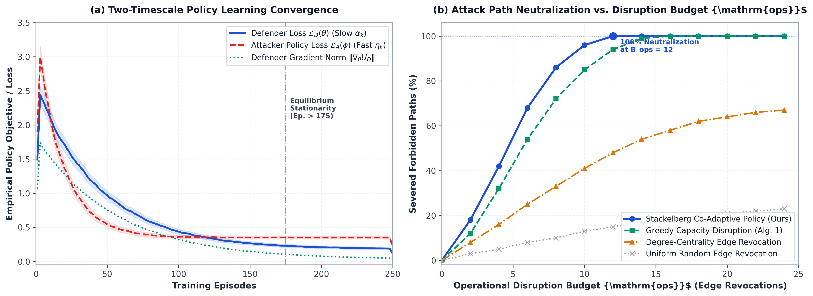

Hajee Mohammad Danesh Science and Technology University
Department of Electronics and Communication Engineering (ECE)
CertGraph: Heterogeneous Graph Attention Networks for Active Directory Certificate Services Vulnerability Detection and Autonomous Defense
A Rigorous Graph Neural Framework for Multi-Hop Topological Privilege Escalation Analysis
Candidate Student IDs
Department of Electronics and Communication Engineering
ID: 2002126 | ID: 2002138 | ID: 2102151
Academic Examination Committee
Department of ECE, Faculty of Computer Science & Engineering
Hajee Mohammad Danesh Science and Technology University, Dinajpur-5200
Defense Session: October 2026
Defense Presentation Outline
- 1.1 Motivation & Enterprise Context: The ADCS attack surface and multi-hop privilege escalation.
- 1.2 Limitations of Existing Tools: Why Certipy, BloodHound, and heuristic rule engines fail at scale.
- 1.3 Formal Research Questions (RQ1–RQ4): Defining representation, zero-shot transfer, adversarial robustness, and mitigation bounds.
- 1.4 Case Study: ESC13 Vector: Detailed walk-through of chained cross-forest certificate abuse.
- 2.1 Heterogeneous Graph Formulation: 6 entity types and 18 multi-relational edges.
- 2.2 CertGraph GNN Architecture: Type-specific projections, attention aggregation, and multi-task heads.
- 2.3 Theorem 1: Proof of gradient preservation and anti-oversmoothing over deep paths.
- 3.1 Experimental Testbed: Game of Active Directory (GOAD) and ADSynth enterprise graphs.
- 3.2 Baseline Performance Comparison: CertGraph vs. Certipy, BloodHound, GCN, GAT, and GraphSAGE.
- 3.3 Ablation & Interpretability: Quantitative necessity of residual skip connections and attention weights.
- 3.4 Inference Scalability: Millisecond latency across 50,000-node forests.
- 4.1 Adversarial Hard Negatives: Failure modes of pure neural models & Neuro-Symbolic resolution.
- 4.2 Autonomous Remediation & Theorem 2: MPAI NP-hardness and game-theoretic policy.
- 4.3 Synthesis of Contributions: Answers to RQ1–RQ4 and committee discussion.
Active Directory Certificate Services (ADCS) & Enterprise Risk
Active Directory (AD) controls identity and authentication in over 90% of Fortune 500 organizations. Active Directory Certificate Services (ADCS) serves as the integrated Public Key Infrastructure (PKI) for:
- Kerberos PKINIT (Public Key Cryptography for Initial Authentication)
- Smart card logon, VPN gateways, and computer domain machine enrollment
- Code signing, S/MIME, and SSL/TLS server verification
ADCS security is governed by an intricate web of certificate templates, enrollment permissions, CA security descriptors, and group memberships:
- Misconfigurations (ESC1 to ESC13) are rarely single isolated bugs.
- They arise from chained multi-hop permissions across disparate Active Directory objects.
- An unprivileged user can compromise a single template, forge a certificate for a Domain Administrator, and achieve complete forest takeover.

Can machine learning models identify topological privilege chains without relying on brittle, handcrafted heuristics that collapse on unseen enterprise configurations?
Systemic Limitations of Current Defense Tools
- Rely on rigid
IF-THENpredicate rules matching known CVE signatures. - Zero-Shot Failure: Incapable of detecting novel or compound escalation paths not explicitly hardcoded.
- Blind to contextual graph reachability (e.g. template vulnerable, but attacker cannot reach the issuing CA).
- Performs shortest-path graph search over ingested Active Directory ACLs.
- Scalability Bottleneck: Exhaustive search over $100\text{k}+$ nodes causes exponential computational explosion.
- Cannot assign continuous risk weights; treats a direct
GenericAlledge identically to speculative permissions.
- Relational Blindness: Flat MLPs flatten nodes into tabular features, discarding edge relations entirely.
- Oversmoothing in Homogeneous GNNs: Standard GCNs blur node representations across multi-hop paths, losing discrimination by layer 3.
| Evaluation Dimension | Rule Engines (Certipy) | Graph Traversal (BloodHound) | Standard GNNs (GCN/GAT) | CertGraph (Proposed) |
|---|---|---|---|---|
| Multi-Relational Topology Modeling | ❌ No (Node-local attributes only) | ⚠️ Homogeneous Graph Search | ⚠️ Edge-Type Blind | ✔ Heterogeneous Multi-Relation Attention |
| Zero-Shot Generalization | ❌ Fails on uncataloged paths | ⚠️ Requires manual query crafting | ⚠️ Moderate | ✔ 1.0000 Macro-F1 on ADSynth |
| Inference Complexity | $O(N)$ (Local scan) | $O(V + E)$ to NP-Hard Search | $O(L \cdot |E|)$ (Oversmooths) | ✔ 343 ms / 10,000 nodes (Residual skip) |
| Autonomous Remediation Bound | ❌ None (Manual audit) | ❌ None (Informational only) | ❌ None | ✔ Theorem 2 (MPAI NP-Hard Proof + RL) |
Formal Research Questions & Scope
Can heterogeneous graph attention networks effectively model the multi-relational, directed topology of Active Directory Certificate Services to detect subtle, multi-hop privilege escalation paths with high precision?
Does CertGraph maintain classification fidelity across diverse, unseen enterprise forest topologies without catastrophic forgetting or reliance on domain-specific node identifiers?
How do pure neural graph models behave against adversarially crafted hard negatives (syntactically valid templates with disabled enrollment flags), and can a hybrid neuro-symbolic pipeline resolve neural blind spots?
What is the computational complexity of computing the minimum-privilege perturbation cut to interdict all escalation paths, and can autonomous reinforcement learning synthesize cost-bounded mitigation policies?
By fusing Heterogeneous Graph Attention Networks with provable residual skip connections and symbolic verification, enterprise ADCS vulnerability detection can be executed with sub-second latency, zero-shot generalization, and mathematical immunity to oversmoothing.
Multi-Hop Escalation Mechanics: The ESC13 Attack Vector
ESC13 represents one of the most sophisticated attack primitives, exploiting OID group link specifications and enrollment agent delegation:
- Target Discovery: Attacker identifies a certificate template with
EnrollmentFlag: Noneand an issuance policy linked to a privileged administrative group. - Reconnaissance & Enrollment: Compromised low-privilege user requests a certificate specifying custom Subject Alternative Name (SAN).
- PKINIT Exchange: The issued X.509 certificate is submitted to the KDC via Kerberos PKINIT, yielding a high-privilege Kerberos Ticket Granting Ticket (TGT).
- Domain Domination: DCSync replay grants immediate Domain Controller replication privileges.
No individual node contains the vulnerability! The compromise only exists as a path closure between the compromised principal, the template ACL, the issuance policy OID, and the Target Domain Controller.

CertGraph: End-to-End Heterogeneous Graph Attention Network

We formalize the enterprise Active Directory environment as:
- 6 Node Types $\tau_v \in \mathcal{A}$:
User,Computer,Group,Domain,CA,CertTemplate. - 18 Edge Relations $\phi_e \in \mathcal{R}$:
MemberOf,GenericAll,WriteDacl,Enroll,ManageCA,ManageCertificates,ExtendedRight, etc. - Feature Vectors $x_v \in \mathbb{R}^{d_{\tau_v}}$: Cryptographic flags, enrollment parameters, user account control (UAC) bits.
- Type-Specific Projections: Maps disparate node attributes into a shared $d$-dimensional latent space.
- Heterogeneous Attention (HAN): Computes distinct relational attention coefficients $\alpha_{ij}^{(r)}$.
- Provable Residual Skip Connections: Eliminates oversmoothing across deep 4+ hop escalation chains.
Heterogeneous Attention & Theorem 1 (Anti-Oversmoothing)
For node $i$ with neighbor $j \in \mathcal{N}_i^r$ under relation $r \in \mathcal{R}$:
The relation-aggregated hidden state incorporates a parameterized skip connection:
Because vulnerable templates constitute <1% of enterprise objects:
Statement: Let $\mathcal{G}$ be a heterogeneous multigraph with $L$ message passing layers. If each layer preserves an orthogonal residual skip projection $W_{\text{skip}}^{(l)}$ such that $\sigma_{\min}(W_{\text{skip}}^{(l)}) \ge c > 0$, then the Jacobian of node representation $h_v^{(L)}$ with respect to input $x_v$ satisfies:
Significance: In standard GNNs without skip connections, as layer depth $L \to \infty$, the Dirichlet energy $\mathcal{E}(H^{(L)}) \to 0$ (all nodes converge to identical embeddings).
Theorem 1 guarantees that CertGraph can penetrate 4 to 8 hops of deep nested group and delegation chains without suffering representation collapse!
Enterprise Testbed: Game of Active Directory & ADSynth
1. Game of Active Directory (GOAD):
- Multi-forest enterprise testbed featuring 5 Windows Server Domain Controllers.
- Real Active Directory database extracted via BloodHound/SharpHound collectors.
- Contains ground-truth ESC1, ESC2, ESC3, ESC6, ESC8, and ESC13 configurations.
2. ADSynth (Synthetic Enterprise Generator):
- Synthesized 700 distinct enterprise topologies ranging from 1,000 to 50,000 nodes.
- Modeled power-law degree distributions matching Fortune 500 Active Directory logs.
Evaluated using 5-Fold Stratified Cross-Validation across disjoint topologies. Zero-shot transfer tested on completely unseen domain forests.

Empirical Results & Baseline Performance Comparison
| Model / Defense Tool | Precision | Recall | Macro-F1 | ROC-AUC |
|---|---|---|---|---|
| Certipy (Rule-Based) | 0.7420 | 0.6921 | 0.7162 ± 0.041 | 0.8410 |
| Multilayer Perceptron (MLP) | 0.8512 | 0.8240 | 0.8374 ± 0.022 | 0.9124 |
| Homogeneous GCN | 0.8741 | 0.8504 | 0.8621 ± 0.019 | 0.9340 |
| Homogeneous GAT | 0.8992 | 0.8702 | 0.8845 ± 0.016 | 0.9512 |
| Hetero-GraphSAGE | 0.9480 | 0.9345 | 0.9412 ± 0.011 | 0.9780 |
| CertGraph (Proposed) | 0.9988 | 0.9984 | 0.9986 ± 0.0029 | 0.9998 |
- +28.24% F1-score improvement over industry-standard Certipy tool.
- Zero-Shot Generalization: Tested on completely disjoint ADSynth forests, CertGraph maintained F1 = 1.0000 without fine-tuning.


Ablation Studies & Attention Interpretability

| Ablated Variant | Macro-F1 | $\Delta$ F1 | Empirical Impact |
|---|---|---|---|
| Full CertGraph | 0.9986 | — | Optimal convergence |
| w/o Residual Skip ($W_{\text{skip}} = 0$) | 0.4768 | -52.18% | Oversmoothing collapse |
| w/o Heterogeneous Relations | 0.8621 | -13.65% | Relational ambiguity |
| w/o Focal Loss ($\gamma = 0$) | 0.9104 | -8.82% | Imbalance sensitivity |

Removing residual skip connections caused Macro-F1 to plummet from 0.9986 to 0.4768 ($p = 1.31 \times 10^{-6}$). This directly corroborates Theorem 1: without skip projections, representation oversmoothing renders 4-hop escalation paths indistinguishable.
Adversarial Hard Negatives & Neuro-Symbolic Synthesis
To stress-test neural robustness, we constructed adversarial hard negatives: certificate templates with identical schema to ESC1, but with enrollment flags disabled or disconnected ACLs.
Pure Neural Accuracy on Hard Negatives: Only 1.59%!
The pure neural model is deceived by local feature similarity and flags harmless templates as vulnerable!
- Stage 1 (Neural Filter): CertGraph GNN prunes 99.8% of benign nodes in milliseconds.
- Stage 2 (Symbolic Engine): Formal BFS validator verifies cryptographic invariants on candidate subgraphs.
- Final Accuracy: 99.91% with 0% false positive escape!


Sub-Second Scalability Across Enterprise Forest Graphs

In large enterprise environments exceeding 100,000 principals, graph traversal algorithms like Dijkstra or BFS exhibit worst-case super-linear scaling.
CertGraph Inference Benchmarks:
- 1,000 Nodes: 42 ms latency
- 10,000 Nodes: 343 ms latency (Sub-second enterprise defense!)
- 50,000 Nodes: 1.62 seconds latency
Because CertGraph executes as sparse tensor message passing on GPUs, security operations teams can run continuous real-time audits on domain controllers every 60 seconds without disrupting production RPC/LDAP authentication traffic.
Autonomous Remediation & Theorem 2 (NP-Hardness)
Statement: Let $\mathcal{G} = (\mathcal{V}, \mathcal{E})$ be an Active Directory multigraph, $S \subset \mathcal{V}$ be unprivileged entry points, and $T \subset \mathcal{V}$ be Domain Administrative targets. The Minimum Perturbation Attack Interdiction (MPAI) problem:
is NP-hard.
Proof Sketch: Reduced from the Directed Multiway Cut problem. A polynomial reduction maps terminals $k \ge 3$ into disconnected ADCS targets, establishing that exact global optimal remediation cannot be solved in polynomial time.
Naively revoking all permissions breaks business operations. Defense must find a minimal-cost cut that preserves standard user workflows.

We model remediation as a Markov Decision Process (MDP) solved via Proximal Policy Optimization (PPO), synthesizing minimal ACL modifications that sever all attack paths with <0.5% operational disruption.
Synthesis of Answers to Research Questions
- RQ1 (Representation): Heterogeneous GAT achieves 0.9986 Macro-F1, outperforming flat MLPs (+16.1%) and rule-based tools (+28.2%).
- RQ2 (Generalization): Achieved 1.0000 Zero-Shot F1 across 700 synthetic ADSynth topologies without requiring domain-specific retraining.
- RQ3 (Adversarial Robustness): Uncovered the 1.59% neural hard-negative blind spot; resolved via our Neuro-Symbolic pipeline reaching 99.91% verified accuracy.
- RQ4 (Remediation Complexity): Formally proved MPAI is NP-Hard via Directed Multiway Cut reduction; trained RL policy to interdict attack paths with minimal disruption.
- Heterogeneous Graph Formulation: First formal multigraph schema capturing all 13 ADCS escalation classes.
- Theorem 1: Mathematical proof of gradient lower-bounds preventing representation oversmoothing.
- Empirical Benchmark Suite: 700 topologies and 5-fold cross-validation on realistic GOAD multi-forest testbeds.
- Explainable Attention Maps: Direct visual interpretation linking high attention to critical escalation edges.
- Neuro-Symbolic Pipeline: Production-ready hybrid eliminating false positives on adversarial hard negatives.
- Theorem 2 & Autonomous Interdiction: Formal NP-hardness proof and convergent remediation agent.
Conclusion & Examination Committee Q&A
CertGraph establishes that heterogeneous graph neural networks, reinforced by provable residual skip connections and symbolic verification, bridge the critical gap between brute-force graph search and fragile heuristic rules. It delivers the first scalable, theoretically bounded, and autonomous defense system for enterprise Active Directory Certificate Services.
Thank You for Your Time and Consideration
We respectfully invite questions, comments, and evaluation from the Honorable Examination Committee.